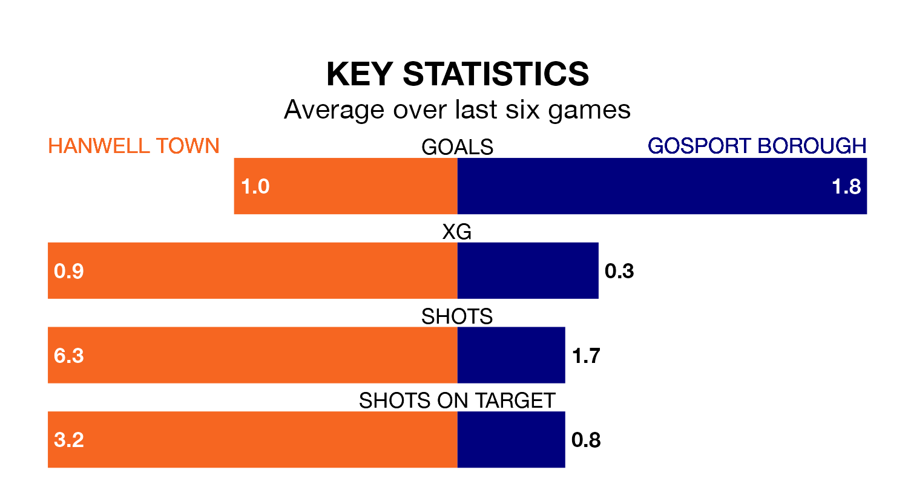

Gosport Borough are strong favourites to take all three points despite Hanwell Town's home advantage in Saturday's match at Reynolds Field.
*Betting Company* are offering odds of 1.72 on Gosport sealing the win, with the visitors sitting second in the Southern League Premier South table.
Hanwell, who are 17th in the league and 29 points behind Gosport, are priced at 3.32 to win. A draw is set at 3.49.
With 68 goals in 37 games so far this season, Gosport are scoring more than average in the league with 1.8 goals per game. And they are conceding fewer than average, letting in 38 goals at a rate of 1.0 per game.
Hanwell, meanwhile, are below average scorers, with 1.6 goals per game, compared to a league average of 1.7. They have conceded 1.8 goals per game.
Town are in mixed form in the Southern League Premier South, with two wins and a draw from their last six games.
With four wins and two losses over that period, Borough's form is better – they have taken 12 points from 18, compared to the home side's seven.
In the last three years, Hanwell and Gosport have played each other on three occasions. Hanwell won two of them and Gosport one.
Their last meeting was on November 29, when Gosport won 3-2 at home.
Hanwell's last match was on Tuesday, a 1-0 loss against Beaconsfield Town.
Gosport beat Winchester City 2-1 last time out, on Monday.
Updated: 16:41 (UTC), 04/04/24